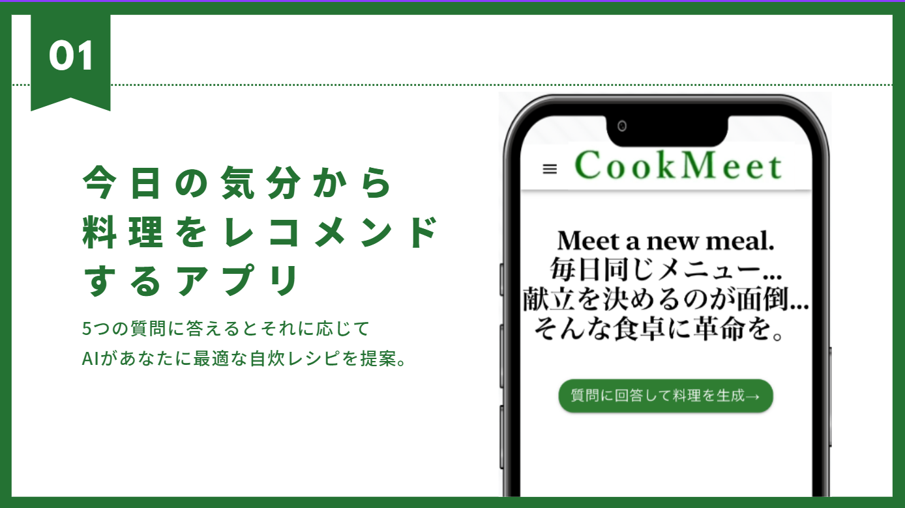

CookMeet

| 使用言語など | フロントエンド：TypeScript,Next.js,Vercel バックエンド：Go(Echo),Docker,PostgreSQL,Render |
|---|---|
| 作成経緯 | 私以外のメンバー2名が1人暮らしをしているという会話になり、2人が「毎日ごはんのレシピを決めるのに結構悩む」ということを言っていた。 私は実家暮らしだが、たまに料理をしようと思い立つ時がある。 ただ、パッと作りたいレシピが決まらずに結局作らずに終わってしまうことがよくあったので、2人の意見には共感ができた。 そこで、レシピをすぐに決められるようなアプリを開発しようということになった。 |
| 内容 | ## アプリの概要 ### 想定した対象 ・生活が忙しく、食べるものがいつも同じになってしまう社会人や学生 ・作るレシピをなかなか選べない優柔不断な人 ・普段は選ばないようなレシピに挑戦してみたい人 ### 特徴 ・提示された質問に回答するとAIによってレシピが3つ提案される ・質問の内容は時短orじっくり、気分がいいor落ち込んでいるor疲れている、次の日の予定の有無などバリエーションを豊かに ・3つのうちから好きなレシピを選択すると材料や作り方が表示されるため、すぐに料理作りに取り組める ・材料、手順の確認はそれぞれ1つのページ上だけで行うことができる ### 機能 **ログイン機能** jwtトークンによる認証 **質問回答機能** 提示された質問にユーザーが答えていく **レシピの材料・手順表示機能** ユーザーが選択したレシピの材料や手順が表示される 材料->手順は1タップで移動可能 **料理の写真登録機能** 自分が作った料理の写真をアップロードでき、後から見返すことができる **調理履歴閲覧機能** 過去に作成した料理のレシピや写真を確認できる 内容は以下の記事にも記載している。 Zenn |
| プログラムファイル | GitHub |
| 実行結果 | 本プログラムで作成したサイト サイトのスクリーンショット |